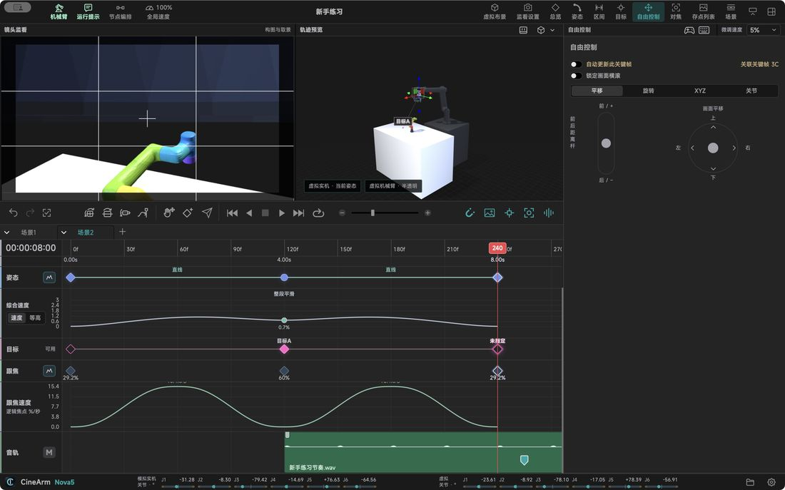

Features in detail / Six workspace areas, one job each
Six workspace areas, one job each
The app opens the project manager first; inside the workspace these six areas never change role.
Top barArm status, run messages, node/timeline switching, global speed, project name. Check it before every take.
MonitorCamera, capture card or virtual camera — the frame the camera actually sees.
Trajectory previewThe 3D arm, path, aim, snapshots and set, seen from a bystander's angle.
Timeline / nodesPositions, timing, connections, motion and audio; switch views freely.
InspectorParameters for the selection, or the free control, target, focus and preset pages. Select first, then edit.
Status barJ1–J6 angles, XYZ position (mm), Rx/Ry/Rz orientation (°), plus the playhead pose. “—” means no data, not zero.
Navigating the 3D viewRight-drag orbits, middle-drag pans, the wheel zooms. Trackpad mode adds two-finger orbit, pinch and three-finger pan; on iPad it is one finger to orbit, two to zoom and pan.
View togglesControls, aim, flange path, optical-centre path and snapshots toggle independently — hiding never deletes data.
Two pathsThe flange path is the tool tip's line; the optical-centre path is the lens's viewpoint, which depends on how the camera is mounted.
Click versus holdJoysticks, return bars and continuous keys require holding — release requests a stop. “Move to”, “move to playhead”, the paper plane and the three levelling actions start on a click and finish after release; abort with pause or Esc.
Orbiting only changes what you see — it does not turn the camera. Judge framing in the monitor.

Describes CineArm v0.1.46 behaviour.